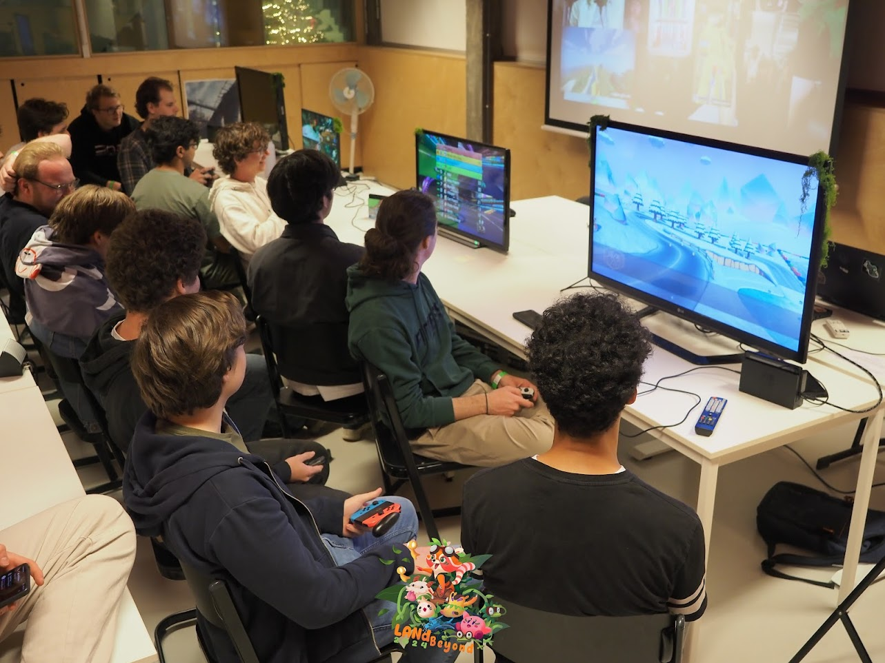
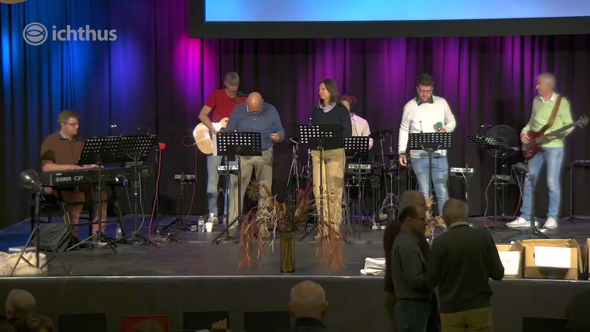
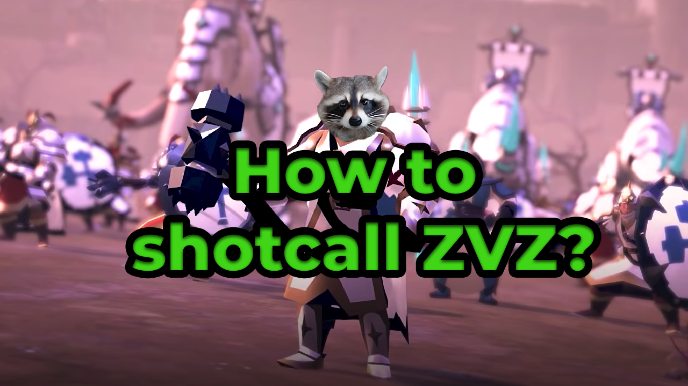
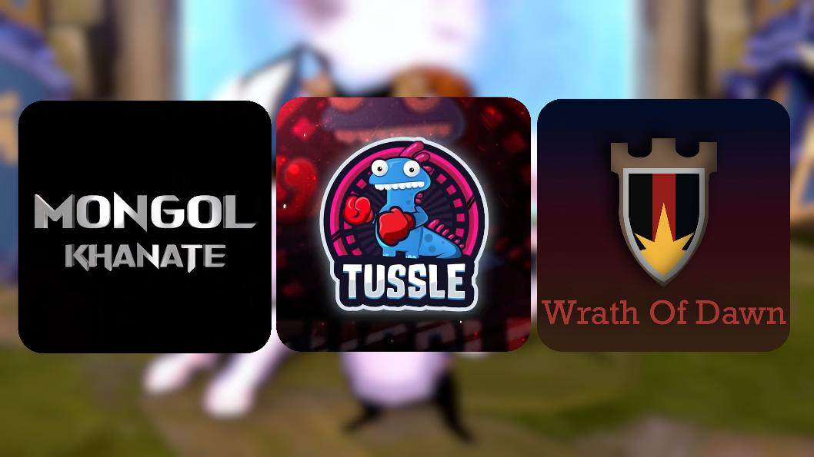
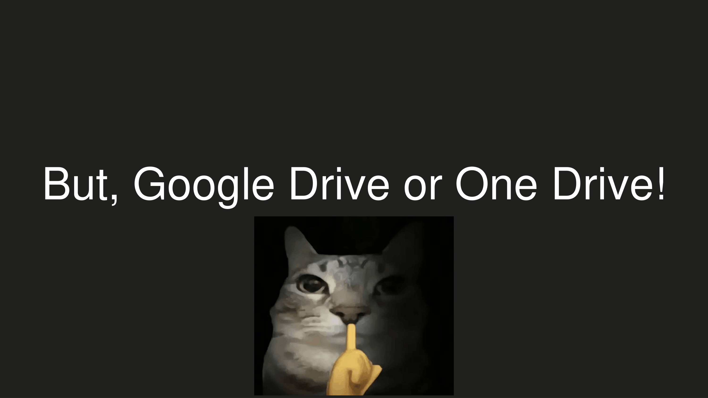
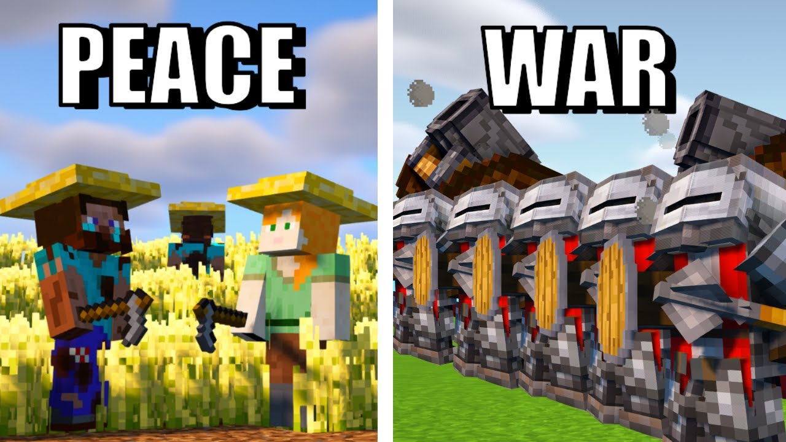

And more...
A showcase of other noteworthy projects


LAN parties (+ student clubs)
Main driver and person responsible for various LAN parties & student clubs


Ichthus
Ichthus Kortrijk is my local pentacostal church where I contribute as livestream member


Guides for Albion Online
Guides I made to contribute to the Albion Online community


Albion Online guilds
My first venture in people management, starting as guild officer and growing into shotcaller & second in command


git gud --fast
Crashcourse git presentation given in the university of Howest


Minecraft Castle siege
Collaborating with a Minecraft YouTuber for an epic castle siege video (and event)